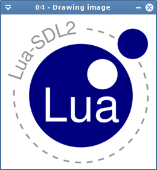
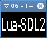

Welcome to Lua-SDL2!
Lua-SDL2 is an SDL 2 binding for Lua. It is released under the ISC license.
Lua-SDL2 uses the same versioning as SDL except that it adds a trailing -v where v is the binding version (e.g 2.0.3-4 is SDL 2.0.3 and binding version 4).
To obtain the Lua-SDL2 sources:
(Precompiled binaries are not available at present.)
Release tarballs can be downloaded from Github.
The latest version of the code may be checked out via git:
$ git clone https://github.com/Tangent128/luasdl2.git
Note that the development version's stability can very heavily from commit to commit. Some revisions may be obviously buggy, others might be stabler than the previous release. Don't rely on them for production.
The following categories are the available group of SDL functions. They all belong to the SDL module.
local SDL = require "SDL"
| Category | Description |
|---|---|
| Initialization | Initialize SDL and its modules |
| Errors | Error management and reporting |
| Logging | Logging functions |
| Hints | Hints |
| Category | Description |
|---|---|
| Display | Display management |
| Window | Window management |
| Texture | Texture creation and manipulation |
| Surface | Surface object |
| Renderer | Renderer management |
| GL | OpenGL management |
| Category | Description |
|---|---|
| Platform | Platform inspection |
| Power | Power management |
| RWops | Portable file management |
| Filesystem | File system |
| Category | Description |
|---|---|
| Threads | Threads |
| Channels | Per thread messages |
| Timer | Timers |
| Category | Description |
|---|---|
| Audio | Audio management |
| Category | Description |
|---|---|
| Events | General events functions |
| Mouse | Mouse handling |
| Keyboard | Keyboard handling and input |
| Joystick | Joystick input |
| Haptic | Force feedback support |
| Category | Description |
|---|---|
| Rectangle | How to manage SDL_Rect |
| Color | How to deal with colors |
| Point | How to use points |
| Line | Line management |
Lua-SDL2 installation guide.
And optional libraries for the official SDL modules:
Take care to substitute version with the current Lua-SDL2 version.
$ tar xvzf Lua-SDL2-version.tar.gz $ cd Lua-SDL2-version $ mkdir _build_ $ cd _build_ $ cmake .. $ make # make install
Several options are available. The following commands are expected to be ran in the build directory created above.
$ cmake .. -DWITH_MIXER=Off
$ cmake .. -DWITH_TTF=Off
$ cmake .. -DWITH_NET=Off
$ cmake .. -DWITH_IMAGE=Off
$ cmake .. -DWITH_DOCS=Off
$ cmake .. -DLUA_LIBDIR=/path/to/install/libraries
Note that this is relative to CMAKE_INSTALL_PREFIX.
$ cmake .. -DWITH_DOCSDIR=/path/to/install/examples
Note that this is relative to CMAKE_INSTALL_PREFIX.
You can change the Lua version by setting the WITH_LUAVER CMake variable; supported values are:
$ cmake .. -DWITH_LUAVER=JIT
It is sometimes useful to explicitly specify the path to the selected Lua version's include and library directories. The variables to set depend on the configured version:
$ cmake .. -DWITH_LUAVER=53 -DLUA53_INCLUDE_DIR=/path/to/headers/
$ cmake .. -DWITH_LUAVER=52 -DLUA52_INCLUDE_DIR=/path/to/headers/
$ cmake .. -DWITH_LUAVER=51 -DLUA_INCLUDE_DIR=/path/to/headers/
$ cmake .. -DWITH_LUAVER=JIT -DLUAJIT_INCLUDE_DIR=/path/to/headers/
Also note that the include directory should be the one directly containing the headers. We #include <lua.h>, not #include <lua/lua.h>.
Flags for initializing SDL_image.
image.flags = {
JPG,
PNG,
TIF
}
Initialize SDL_image module.
flags, ret, err = function image.init(flags)
Check if the image is a certain type.
ret, err = function image.is(rwops, name)
Load an image a surface from a file.
s, err = function image.load(path)
Load an image a surface from a RWops.
s, err = function image.load(rwops, name)
Close the module.
function image.quit()
Lua-SDL2 is implemented in pure C without any Lua code. It should runs on major platforms that supports at least ANSI C and some addons.
Lua-SDL2 has been tested on the following platforms:
Lua-SDL2 has some differences with the official SDL-2.0 C API.
First, it uses object orientation for many structures. But some limitations of Lua also needs to implement the binding differently.
Gradually fade in the chunk.
ret, err = function Chunk:fadeInChannel(channel, loops, delay, ticks)
The Mix_Chunk wrapper.
| Method | Description |
|---|---|
| Chunk:volume | Play the chunk |
| Chunk:playChannel | Play in a channel |
| Chunk:fadeInChannel | Fade in gradually in a channel |
Play the chunk on a channel.
ret, err = function Chunk:playChannel(channel, loops, ticks)
Set the chunk volume.
vol = function Chunk:volume(vol)
Fading status.
mixer.fading = {
None,
Out,
In
}
Flags for SDL_mixer initialization.
mixer.flags = {
FLAC,
OGG,
MOD,
MP3
}
Fade in gradually.
ret, err = function Music:fadeIn(loops, delay, position)
Fade out gradually.
ret, err = function Music:fadeOut(delay)
Get the music fading status.
status = function Music:fading()
Get the music type.
type = function Music:getType()
Halt the music.
function Music:halt()
The Mix_Music object wrapper.
| Method | Description |
|---|---|
| Music:play | Play the music |
| Music:fadeIn | Fade in gradually |
| Music:volume | Set the volume |
| Music:resume | Resume the music |
| Music:rewind | Rewind |
| Music:setPosition | Set the position |
| Music:halt | Stop the music |
| Music:fadeOut | Fade out gradually |
| Music:getType | Get the music type |
| Music:paused | Check if paused |
| Music:playing | Check if playing |
| Music:fading | Get the fading status |
Check if the music is paused.
status = function Music:paused()
Play the music.
ret, err = function Music:play(loops)
Check if the music is playing.
status = function Music:playing()
Resume a paused music.
function Music:resume()
Rewind the music.
function Music:rewind()
Set the music position.
ret, err = function Music:setPosition(pos)
Set the music volume.
vol = function Music:volume(vol)
Music type.
mixer.type = {
None,
WAV,
MOD,
MID,
MP3,
OGG
}
Allocate channels.
n = function mixer.allocateChannels(n)
Close the audio.
function mixer.closeAudio()
Halt a channel after a delay.
n = function mixer.expireChannel(channel, delay)
Fade out some channels.
n = function mixer.fadeOutSomeChannels(channel, delay)
Fade out a group progressively.
count = function mixer.fadeOutGroup(tag, delay)
Check the fading status.
status = function mixer.fadingChannel(channel)
Get a chunk decoder name.
name = function mixer.getChunkDecoder(index)
Get a music decoder name.
name = function mixer.getMusicDecoder(index)
Get the number of chunk decoders.
n = function mixer.getNumChunkDecoders()
Get the number of music decoders.
num = function mixer.getNumMusicDecoders()
Get the first channel available.
channel = function mixer.groupAvailable(tag)
Group a channel.
ret = function mixer.groupChannel(channel, tag)
Group several channels.
n = function mixer.groupChannels(from, to, tag)
Get the number of channels in the group.
n = function mixer.groupCount(tag)
Find the newest channel actively playing.
channel = function mixer.groupNewer(tag)
Find the oldest channel actively playing.
channel = function mixer.groupOldest(tag)
Halt a channel.
ret = function mixer.haltChannel(channel)
Halt a group.
count = function mixer.fadeOutGroup(tag)
Initialize the module.
flags, ret, err = function mixer.init(flags)
Load a music by path.
music, err = function mixer.loadMUS(path)
Load a wav file as a chunk.
chunk, err = function mixer.loadWAV(path)
Load a chunk from a RWops.
chunk,err = function mixer.loadWAV_RW(rw)
Open the audio system.
ret, err = function mixer.openAudio(frequency, format, channels, chunksize)
Pause some channels.
function mixer.pause(channel)
Check how many channels are paused.
ret = function mixer.paused(channel)
Check how many channels are playing.
ret = function mixer.playing(channel)
Quit the audio subsystem.
function mixer.quit()
Reserve some channels.
n = function mixer.reserveChannels(count)
Resume some channels
function mixer.resume(channel)
Set the volume
volume = function mixer.volume(channel, volume)
The IP address definition
local address = {
host,
port
}
Object wrapper for SDLNet_SocketSet.
| Method | Description |
|---|---|
| Set:add | Add a socket for input |
| Set:del | Remove a socket from the set |
| Set:checkSockets | Wait a socket for being ready |
Add a socket to the set.
Note: This function will reference the socket in the registry and will not be garbage collected if the owner of the socket delete it. The reference will be removed when the set is destroyed or when the user remove the reference using Set:del.
length, err = function Set:add(s)
Wait for sockets to be ready.
n = function Set:checkSockets(timeout)
Remove a socket from the set. The set will not own the socket anymore.
length, err = function Set:del(s)
Accept a socket.
s, err = function TcpSocket:accept()
Close the socket.
function TcpSocket:close()
Get the peer address.
address, err = function TcpSocket:getPeerAddress()
Object wrapping the TCPsocket.
| Method | Description |
|---|---|
| TcpSocket:close | Close the socket |
| TcpSocket:accept | Accept a socket |
| TcpSocket:getPeerAddress | Get the peer address |
| TcpSocket:send | Send some data |
| TcpSocket:recv | Receive some data |
| TcpSocket:ready | Check if the socket is ready |
Check if the socket is ready.
state = function TcpSocket:ready()
Receive some data.
str, length, err = function TcpSocket:recv(count)
Send some data.
sent, err = function TcpSocket:send(data)
Bind the socket to an address.
channel, err = function UdpSocket:bind(channel, address)
Close the socket.
function UdpSocket:close()
Get the peer address.
address, err = function UdpSocket:getPeerAddress()
Object wrapping the UDPsocket.
| Method | Description |
|---|---|
| UdpSocket:close | Close the socket |
| UdpSocket:bind | Bind the socket |
| UdpSocket:unbind | Unbind the socket |
| UdpSocket:getPeerAddress | Get the peer address |
| UdpSocket:send | Send some data |
| UdpSocket:recv | Receive some data |
| UdpSocket:ready | Check if the socket is ready |
Check if the socket is ready.
state = function UdpSocket:ready()
Receive some data.
str, length, err = function UdpSocket:recv()
Send some data using a channel.
n, err = function UdpSocket:send(data, channel)
Send some data using an address.
n, err = function UdpSocket:send(data, address)
Unbind the socket.
function UdpSocket:unbind(channel)
Initialize the SDL_net module.
ret, err = function net.init()
Create a TCP object.
s, err = function net.openTcp(address)
Create a UDP object.
s, err = function net.openUdp(port)
Close the module.
function net.quit()
Resolve an hostname.
address, err = function net.resolveHost(host, port)
Resolve the host address from an IpAddress.
host, err = function net.resolveIp(address)
Create a new socket set.
set, err = function net.set(max)
Additional module for SDL_image.
local image = require "SDL.image"
| Table | Description |
|---|---|
| image.flags | Flags for initialization |
| Function | Description |
|---|---|
| image.init | Initialize SDL_image |
| image.quit | Quit the module |
| image.load | Load an image from a path |
| image.load_RW | Load an image from a RWops |
| image.is | Check if an image is a certain type |
Additional module for SDL_mixer.
local mixer = require "SDL.mixer"
| Object | Description |
|---|---|
| Music | A music object |
| Chunk | A chunk object |
| Table | Description |
|---|---|
| mixer.flags | Flags for mixer |
| mixer.fading | Fading status |
| mixer.type | Type of music |
| Function | Description |
|---|---|
| mixer.init | Initialize the SDL_mixer module |
| mixer.openAudio | Open an audio device |
| mixer.getNumChunkDecoders | Get the number of decoders |
| mixer.getChunkDecoder | Get a chunk decoder name |
| mixer.loadWAV | Load a chunk by path |
| mixer.loadWAV_RW | Load a chunk with RWops |
| mixer.allocateChannels | Prepare channels |
| mixer.volume | Set or get the volume |
| mixer.pause | Pause the sound system |
| mixer.resume | Resume the sound |
| mixer.haltChannel | Halt a channel |
| mixer.expireChannel | Expire a channel |
| mixer.fadeOutChannel | Fade out effect |
| mixer.playing | Check if playing |
| mixer.paused | Check if paused |
| mixer.fadingChannel | Get the fading status |
| mixer.reserveChannels | Reserve channels |
| mixer.groupChannel | Group channel |
| mixer.groupChannels | Group channels |
| mixer.groupCount | Get the number of channels in a group |
| mixer.groupAvailable | Find a channel in a group |
| mixer.groupOldest | Get the oldest channel |
| mixer.groupNewer | Get the newest channel |
| mixer.fadeOutGroup | Fade out a group |
| mixer.haltGroup | Halt a group |
| mixer.getNumMusicDecoders | Get the number of music decoders |
| mixer.getMusicDecoder | Get a music decoder name |
| mixer.loadMUS | Load a music |
| mixer.closeAudio | Close the audio |
| mixer.quit | Close the SDL_mixer module |
Additional module for SDL_net.
local net = require "SDL.net"
| Type | Description |
|---|---|
| IpAddress | An internet IP address definition |
| Object | Description |
|---|---|
| Set | A set of sockets |
| UdpSocket | A UDP socket |
| TcpSocket | A TCP socket |
| Function | Description |
|---|---|
| net.init | Initialize the module |
| net.resolveHost | Resolve a hostname |
| net.resolveIp | Resolve an ip address |
| net.set | Create a new set |
| net.openTcp | Create a TCP socket |
| net.openUdp | Create a UDP socket |
| net.quit | Close the module |
Additional module for SDL_ttf.
local ttf = require "SDL.ttf"
| Object | Description |
|---|---|
| Font | Font object that maps TTF_Font |
| Table | Description |
|---|---|
| ttf.fontStyle | Font style rendering |
| ttf.fontHinting | Font hinting |
| Function | Description |
|---|---|
| ttf.init | Initialize the module |
| ttf.open | Open a font |
| ttf.quit | Close the module |
The audio callback is used to play sound. It is called by the SDL internal code at a specific interval. Because it runs in a different thread, it also require to be ran in a different Lua state.
That is, to facilitate the audio process, only a file as a callback is currently allowed. This file must return a function to be called everytime the SDL needs to play audio.
stream = function callback(length)
The audio device object.
| Method | Description |
|---|---|
| AudioDevice:close | Close the device |
| AudioDevice:pause | Pause the device |
| AudioDevice:lock | Lock the device |
| AudioDevice:status | Get the audio device status |
| AudioDevice:unlock | Unlock the audio device |
Close the device.
function AudioDevice:close()
Lock the audio device.
function AudioDevice:lock()
Pause the audio device.
function AudioDevice:pause(mode)
Get the audio status.
status = function AudioDevice:status()
Unlock the audio device.
function AudioDevice:unlock()
The SDL audio format.
SDL.audioFormat = {
S8,
U8,
S16LSB,
S16MSB,
S16SYS,
S16,
U16LSB,
U16MSB,
U16SYS,
U16,
S32LSB,
S32MSB,
S32SYS,
S32,
F32LSB,
F32MSB,
F32SYS,
F32
}
The audio status.
SDL.audioStatus = {
Stopped,
Playing,
Paused
}
Enumeration for blend mode.
SDL.blendMode = {
None,
Blend,
Add,
Mod
}
Remove all the values from the channel.
function Channel:clear()
Get the first value.
Note: this function does not pop the value.
value = function Channel:first()
Get the last value.
Note: this function does not pop the value.
value = function Channel:last()
The channel object. Every of these functions are thread safe.
| Method | Description |
|---|---|
| Channel:first | Peek the first value |
| Channel:last | Peek the last value |
| Channel:push | Push a value |
| Channel:supply | Supply a value and wait a thread to accept it |
| Channel:wait | Wait for a value to be supplied |
| Channel:pop | Remove the head value |
| Channel:clear | Remove all values from the channel |
Pop the first value.
function Channel:pop()
Push a value to the queue. This function also signals the arrival of the value to waiting threads.
ret, err = function Channel:push(value)
Works like Channel:push except that waits indefinitely until a thread get the value.
ret, err = function Channel:supply(value)
Wait indefinitely for a value to be supplied using Channel:supply.
Note: this function does not pop the value.
value = function Channel:wait()
Color definition as an hexadecimal number.
local c = 0xAABBCC
local c = 0xef1cb3
Color definition as a table.
local c = {
r, g, b
}
local c = {
r = 60,
g = 40,
b = 100
}
A sequence of color. The sequence can safely mix tables and hexadecimal values.
local sequence = {
c1, c2, ..., cn
}
local colors = { { r = 10, g = 10, b = 60 }, 0xffbbcc }
This an opaque object used by many several functions. It does not have any methods.
A table used for handling display modes.
local displaymode = {
w,
h,
format,
refreshRate
}
Action to do.
SDL.eventAction = {
Add,
Peek,
Get
}
This is the table used for handling events. Fields are dynamically set depending on the type of event.
local event = {
type,
...
}
Type of event.
SDL.event = {
First,
Quit,
AppTerminating,
AppLowMemory,
AppWillEnterBackground,
AppDidEnterBackground,
AppWillEnterForeground,
AppDidEnterForeground,
WindowEvent,
KeyDown,
KeyUp,
TextEditing,
TextInput,
MouseMotion,
MouseButtonDown,
MouseButtonUp,
MouseWheel,
JoyAxisMotion,
JoyBallMotion,
JoyHatMotion,
JoyButtonDown,
JoyButtonUp,
JoyDeviceAdded,
JoyDeviceRemoved,
ControllerAxisMotion,
ControllerButtonDown,
ControllerButtonUp,
ControllerDeviceAdded,
ControllerDeviceRemoved,
ControllerDeviceRemapped,
FingerDown,
FingerUp,
FingerMotion,
DollarGesture,
DollarRecord,
MultiGesture,
ClipboardUpdate,
DropFile,
UserEvent,
Last,
}
Window event.
SDL.eventWindow = {
Shown,
Hidden,
Exposed,
Moved,
Resized,
SizeChanged,
Minimized,
Maximized,
Restored,
Enter,
Leave,
FocusGained,
FocusLost,
Close
}
The filter object.
| Method | Description |
|---|---|
| Filter:remove | Remove the filter |
Remove the filter and its SDL callback. This function is also called when the object is collected.
function Filter:remove()
OpenGL attributes.
SDL.glAttr = {
RedSize,
GreenSize,
BlueSize,
AlphaSize,
BufferSize,
DoubleBuffer,
DepthSize,
StencilSize,
AccumRedSize,
AccumGreenSize,
AccumBlueSize,
AccumAlphaSize,
Stereo,
MultiSampleBuffers,
MultiSampleSamples,
AcceleratedVisual,
RetainedBacking,
ContextMajorVersion,
ContextMinorVersion,
ContextEGL,
ContextFlags,
ContextProfileMask,
ShareWithCurrentContext,
FramebufferSRGBCapable
}
OpenGL flags.
SDL.glFlags = {
Debug,
ForwardCompatible,
RobustAccess,
ResetIsolation
}
OpenGL profile
SDL.glProfile = {
Core,
Compatibility,
ES
}
Destroy the effect.
function Haptic:destroyEffect(effect)
The haptic direction.
SDL.hapticDirection = {
Polar,
Cartesian,
Spherical
}
The mapping of SDL_HapticDirection.
local direction = {
type
directions = { }
}
The effect description. The table is used for every effect type defined in SDL.hapticType.
local effect = {
type
...
Check if an effect is supported.
ret, err = function Haptic:effectSupported(effect)
Get the effect status.
status = function Haptic:getEffect(effect)
Get the haptic index.
index = function Haptic:index()
Add a new effect.
id, err = function Haptic:newEffect(effect)
Get the number of axes.
n, err = function Haptic:numAxes()
Get the number of effects.
n, err = function Haptic:numEffects()
Get the number of effects playing.
n, err = function Haptic:numEffectsPlaying()
The haptic object.
| Method | Description |
|---|---|
| Haptic:destroyEffect | Destroy an effect |
| Haptic:effectSupported | Check if an effect is supported |
| Haptic:getEffectStatus | Get the effect status |
| Haptic:index | Get the haptic index |
| Haptic:newEffect | Create a new effect |
| Haptic:numAxes | Get the number of axes |
| Haptic:numEffects | Get the number of effects |
| Haptic:numEffectsPlaying | Get the number of effects playing |
| Haptic:pause | Pause the haptic |
| Haptic:rumbleInit | Init the rumble |
| Haptic:rumblePlay | Play the rumble |
| Haptic:rumbleStop | Stop the rumble |
| Haptic:rumbleSupported | Check if rumble is supported |
| Haptic:runEffect | Run an effect |
| Haptic:setAutocenter | Set the autocenter flag |
| Haptic:setGain | Set the gain value |
| Haptic:stopAll | Stop all effects |
| Haptic:stopEffect | Stop an effect |
| Haptic:unpause | Unpause |
| Haptic:updateEffect | Update effect |
Pause the device.
ret, err = function Haptic:pause()
Rumble initialization.
ret, err = function Haptic:rumbleInit()
Play the rumble.
ret, err = function Haptic:rumblePlay(strength, length)
Stop the rumble.
ret, err = function Haptic:rumbleStop()
Check if rumble is supported.
ret, err = function Haptic:rumbleSupported()
Run an effect.
ret, err = function Haptic:runEffect(id, iterations)
Set to auto center.
ret, err = function Haptic:setAutocenter(value)
Set the gain value.
ret, err = function Haptic:setGain(value)
Stop all effects.
ret, err = function Haptic:stopAll()
Stop an effect.
ret, err = function Haptic:stopEffect(id)
The haptic type.
SDL.hapticType = {
Constant,
Sine,
Square, -- only if SDL_HAPTIC_SQUARE is defined in the SDL_haptic.h file!
Triangle,
SawToothUp,
SawToothDown,
Spring,
Damper,
Inertia,
Friction,
Ramp,
LeftRight,
Custom
}
Unpause the haptic device.
ret, err = function Haptic:unpause()
Update an existing effect.
ret, err = function Haptic:updateEffect(id, e)
An enumeration of hint priorities.
SDL.hintPriority = {
Default,
Normal,
Override
}
Enumeration table used for SDL.init.
SDL.flags = {
Audio,
Events,
Everything,
GameController,
Haptic,
Joystick,
NoParachute,
Video
}
local ret, err = SDL.init { SDL.init.Audio, SDL.init.Joystick }
if not ret then
error(err)
end
Get the attach status.
ret, err = function Joystick:getAttached()
Get an axis value.
value = function Joystick:getAxis(axis)
Get the ball position.
x, y, err = function Joystick:getBall(ball)
Get the button state.
state = function Joystick:getButton(which)
Get the hat position value.
value = function Joystick:getHat(which)
The position of the hat value in joysticks.
SDL.joyHat = {
Left,
LeftUp,
Up,
RightUp,
Right,
RightDown,
Down,
LeftDown
}
Get the joystick instance id.
id = function Joystick:instanceID()
Get the joystick name.
name, err = function Joystick:name()
Get the number of axes.
num, err = function Joystick:numAxes()
Get the number of balls.
num, err = function Joystick:numBalls()
Get the number of buttons.
num, err = function Joystick:numButtons()
Get the number of axes.
num, err = function Joystick:numHats()
The joystick object mapped from the type SDL_Joystick and its related functions.
| Method | Description |
|---|---|
| Joystick:getAttached | Get the joystick status |
| Joystick:getAxis | Get the axis value |
| Joystick:getBall | Get the ball value |
| Joystick:getButton | Get the button value |
| Joystick:getHat | Get the hat value |
| Joystick:instanceID | Get the id |
| Joystick:name | Get the joystick name |
| Joystick:numAxes | Get the number of axes |
| Joystick:numBalls | Get the number of balls |
| Joystick:numButtons | Get the number of buttons |
| Joystick:numHats | Get the number of hats |
Enumeration for keys.
SDL.key = {
Unknown,
Return,
Escape,
Backspace,
Tab,
Space,
Exclaim,
Quotedbl,
Hash,
Percent,
Dollar,
Ampersand,
Quote,
LeftParen,
RightParen,
Asterisk,
Plus,
Comma,
Minus,
Period,
Slash,
0,
1,
2,
3,
4,
5,
6,
7,
8,
9,
Colon,
Semicolon,
Less,
Equals,
Greater,
Question,
At,
LeftBracked,
Backslash,
RightBracket,
Caret,
Underscore,
Backquote,
a,
b,
c,
d,
e,
f,
g,
h,
i,
j,
k,
l,
m,
n,
o,
p,
q,
r,
s,
t,
u,
v,
w,
x,
y,
z,
Capslock,
F1,
F2,
F3,
F4,
F5,
F6,
F7,
F8,
F9,
F10,
F11,
F11,
Printscreen,
ScrollLock,
Pause,
Insert,
Home,
PageUp,
Delete,
End,
PageDown,
Right,
Left,
Down,
Up,
NumlockClear,
KPDivide,
KPMultiply,
KPMinus,
KPPlus,
KPEnter,
KP1,
KP2,
KP3,
KP4,
KP5,
KP6,
KP7,
KP8,
KP9,
KP0,
KPPeriod,
Application,
Power,
KPEquals,
F13,
F14,
F15,
F16,
F17,
F18,
F19,
F20,
F21,
F22,
F23,
F24,
Execute,
Help,
Menu,
Select,
Stop,
Again,
Undo,
Cut,
Copy,
Paste,
Find,
Mute,
VolumeUp,
VolumeDown,
KPComma,
KPEqualsAS400,
Alterase,
SysReq,
Cancel,
Clear,
Prior,
Return2,
Separator,
Out,
Oper,
Clearagain,
CrSel,
Exsel,
KP00,
KP000,
ThousandsSeparator,
DecimalSeparator,
CurrencyUnit,
CurrencySubUnit,
KPLeftParen,
KPRightParen,
KPLeftBrace,
KPRightBrace,
KPTab,
KPBackSpace,
KPA,
KPB,
KPC,
KPD,
KPE,
KPF,
KPXor,
KPPower,
KPPercent,
KPLess,
KPGreater,
KPAmpersand,
KPDblAmpersand,
KPVerticalBar,
KPDblVerticalBar,
KPColon,
KPHash,
KPSpace,
KPAt,
KPExclam,
KPMemStore,
KPMemRecall,
KPMemClear,
KPMemAdd,
KPMemSubstract,
KPMemMultiply,
KPMemDivide,
KPPlusMinus,
KPClear,
KPClearEntry,
KPBinary,
KPOctal,
KPDecimal,
KPHexadecimal,
LeftControl,
LeftShift,
LeftAlt,
LeftGUI,
RightControl,
RightShift,
RightAlt,
RGUI,
Mode,
AudioNext,
AudioPrev,
AudioStop,
AudioPlay,
AudioMute,
MediaSelect,
WWW,
Mail,
Calculator,
Computer,
ACSearch,
ACHome,
ACBack,
ACForward,
ACStop,
ACRefresh,
ACBookmarks,
BrightnessDown,
BrightnessUp,
DisplaySwitch,
KBDIllumToggle,
KBDIllumDown,
KBDIllumUp,
Eject,
Sleep,
}
Keyboard modifiers.
SDL.keymod = {
None,
LeftShift,
RightShift,
LeftControl,
RightControl,
LeftAlt,
RightAlt,
LGUI,
RGUI,
Num,
Caps,
Mode,
}
This object is used to pack the lines in most of the rendering functions. It does not map any SDL object.
local l = {
x1, x2, y1, y2
}
local l = {
x1 = 10,
y1 = 10,
x2 = 20,
y2 = 20
}
A sequence of line.
local sequence = {
l1, l2, ..., ln
}
local lines = { { x1 = 10, y1 = 10, x2 = 20, y2 = 20 }, { x1 = 100, y1 = 100, x2 = 200, y2 = 200 } }
Enumeration table for logging categories.
SDL.logCategory = {
Application,
Error,
System,
Audio,
Video,
Render,
Input,
Custom
}
Enumeration table for logging priorities.
SDL.logPriority = {
Verbose,
Debug,
Info,
Warn,
Error,
Critical
}
This enumeration is used to check the state of a single button.
SDL.mouseButton = {
Left,
Right,
Middle,
X1,
X2
}
This enumeration is used to check the state of multiple buttons at the same time.
SDL.mouseMask = {
Left,
Right,
Middle,
X1,
X2
}
SDL.pixelFormat = {
Unknown,
Index1LSB,
Index1MSB,
Index4LSB,
Index4MSB,
Index8,
RGB332,
RGB444,
RGB555,
BGR555,
ARGB4444,
RGBA4444,
ABGR4444,
BGRA4444,
ARGB1555,
RGBA5551,
ABGR1555,
BGRA5551,
RGB565,
BGR565,
RGB24,
BGR24,
RGB888,
RGBX8888,
BGR888,
BGRX8888,
ARGB8888,
RGBA8888,
ABGR8888,
BGRA8888,
ARGB2101010,
YV12,
IYUV,
YUY2,
UYVY,
YVYU,
}
Point definition.
local p = {
x, y
}
local p = {
x = 60,
y = 40,
}
A sequence of Point.
local sequence = {
p1, p2, ..., pn
}
local points = { { x = 10, y = 10 }, { x = 20, y = 40 } }
Represents the current power state.
SDL.powerState = {
Unknown,
OnBattery,
NoBattery,
Charging,
Charged
}
Create a custom RWops object.
rw, err = function SDL.RWCreate(funcs)
function size()
The size of the stream
function seek(offset, whence)
The seek
function read(n, size)
function write(data, n, size)
function close()
local SDL = require "SDL"
-- The table for RW ops
local reader = { }
function reader.size()
return -1
end
function reader.read(n, size)
local r = reader.file:read(n * size)
if not r then
return nil, 0
end
return r, #r
end
function reader.write(data, n, size)
local r = reader.file:write(data)
if not r then
return 0
end
return n * size
end
function reader.seek(offset, whence)
local v = nil
if whence == SDL.rwopsSeek.Set then
v = "set"
elseif whence == SDL.rwopsSeek.Current then
v = "cur"
elseif whence == SDL.rwopsSeek.End then
v = "end"
end
if not v then
error("unknown whence")
end
local r = reader.file:seek(v, offset)
if not r then
return 0
end
return r
end
function reader.close()
reader.file:close()
end
reader.file = io.open("mario.png", "r")
if not reader.file then
-- Handle your error here
error("Failed to load")
end
local rw = SDL.RWCreate(reader)
Create a RWops object from a file.
function SDL.RWFromFile(path, mode)
The underlying object for SDL_RWops.
| Method | Description |
|---|---|
| RW:close | Close the RW |
| RW:read | Read some data |
| RW:readByte | Read a byte |
| RW:seek | Move in the RW |
| RW:tell | Tell where we are |
| RW:write | Write some data |
| RW:writeByte | Write a byte |
Close the stream.
function RW:close()
Whence for RWops.
SDL.rwopsSeek = {
Set,
Current,
End
}
The type of RWops.
SDL.rwopsType = {
Unknown,
WinFile,
StdFile,
JNIFile,
Memory,
MemoryRO
}
Table equivalent for SDL_Rect.
local r = {
w, h, x, y
}
local r = { 10, 10, -10, -5 }
A sequence of Rect.
local sequence = {
r1, r2, ..., rn
}
local s = { { 5, 5, 10, 10 }, { 10, 10, 20, 20 } }
Clear the renderer.
ret, err = function Renderer:clear()
Copy a texture to the renderer.
ret, err = function Renderer:copy(texture, srcrect, dstrect)
Copy texture to the renderer. The table may or must have the following fields:
ret, err = function Renderer:copyEx(params)
Create a texture.
tex, err = function Renderer:createTexture(format, access, width, height)
Create a texture from a surface.
tex, err = function Renderer:createTextureFromSurface(surface)
Draw a line with the current set color.
ret, err = function Renderer:drawLine(line)
Draw several lines.
ret, err = function Renderer:drawLines(lines)
Draw a point with the current color.
ret, err = function Renderer:drawPoint(point)
Draw several points.
ret, err = function Renderer:drawPoints(points)
Draw a rectangle.
ret, err = function Renderer:drawRect(rect)
Draw rectangles.
ret, err = function Renderer:drawRects(rects)
Fill a rectangle.
ret, err = function Renderer:fillRect(rect)
Fill rectangles.
ret, err = function Renderer:fillRects(rects)
The renderer flags.
SDL.rendererFlags = {
Software,
Accelerated,
PresentVSYNC,
TargetTexture
}
Renderer flip.
SDL.rendererFlip = {
None,
Horizontal,
Vertical
}
Get the clipping rectangle.
rect = function Renderer:getClipRect()
Get the drawing blend mode.
mode = function Renderer:getDrawBlendMode()
Get the drawing color.
hex, c, err = function Renderer:getDrawColor()
Get the renderer information.
info, err = function Renderer:getInfo()
Get the view port.
rect = function Renderer:getViewport()
The renderer information.
local info = {
name,
flags,
numTextureFormats,
maxTextureWidth,
maxTextureHeight,
textureFormats
}
The renderer object.
| Method | Description |
|---|---|
| Renderer:createTexture | Create a texture |
| Renderer:createTextureFromSurface | Create a texture |
| Renderer:clear | Clear the renderer |
| Renderer:copy | Copy to the renderer |
| Renderer:copyEx | Copy to the renderer |
| Renderer:drawLine | Draw a line |
| Renderer:drawLines | Draw lines |
| Renderer:drawPoint | Draw a point |
| Renderer:drawPoints | Draw points |
| Renderer:drawRect | Draw a rectangle |
| Renderer:drawRects | Draw rectangles |
| Renderer:fillRect | Fill rectangle |
| Renderer:fillRects | Fill rectangles |
| Renderer:getClipRect | Get the clipping rectangle |
| Renderer:getDrawBlendMode | Get the drawing blend mode |
| Renderer:getDrawColor | Get the drawing color |
| Renderer:getRendererInfo | Get the info |
| Renderer:getViewport | Get the viewport |
| Renderer:present | Present the renderer |
| Renderer:setClipRect | Set the clipping rectangle |
| Renderer:setDrawBlendMode | Set the drawing blend mode |
| Renderer:setDrawColor | Set the drawing color |
| Renderer:setTarget | Set the target |
| Renderer:setViewport | Set the viewport |
Present the renderer.
function Renderer:present()
Set the clipping rectangle.
ret, err = function Renderer:setClipRect(rect)
Set the draw blend mode.
ret, err = function Renderer:setDrawBlendMode(mode)
Set the drawing color.
ret, err = function Renderer:setDrawColor(c)
Set the target texture.
ret, err = function Renderer:setTarget(texture)
Set the view port.
ret, err = function Renderer:setViewport(rect)
Scancodes.
SDL.scancode = {
Unknown,
A,
B,
C,
D,
E,
F,
G,
H,
I,
J,
K,
L,
M,
N,
O,
P,
Q,
R,
S,
T,
U,
V,
W,
X,
Y,
Z,
1,
2,
3,
4,
5,
6,
7,
8,
9,
0,
Return,
Escape,
Backspace,
Tab,
Space,
Minus,
Equals,
LeftBracket,
RightBracked,
Backslash,
NonUShash,
SemiColon,
Apostrophe,
Grave,
Comma,
Period,
Slash,
CapsLock,
F1,
F2,
F3,
F4,
F5,
F6,
F7,
F8,
F9,
F10,
F11,
F12,
PrintScreen,
ScrollLock,
Pause,
Insert,
Home,
PageUp,
Delete,
End,
PageDown,
Right,
Left,
Down,
Up,
NumlockClear,
KPDivide,
KPMultiply,
KPMinus,
KPPlus,
KPEnter,
KP1,
KP2,
KP3,
KP4,
KP5,
KP6,
KP7,
KP8,
KP9,
KP0,
KPPeriod,
NonUSBackslash,
Application,
Power,
KPEquals,
F13,
F14,
F15,
F16,
F17,
F18,
F19,
F20,
F21,
F22,
F23,
F24,
Execute,
Help,
Menu,
Select,
Stop,
Again,
Undo,
Cut,
Copy,
Paste,
Find,
Mute,
VolumeUp,
VolumeDown,
Comma,
KPEqualsAS400,
International1,
International2,
International3,
International4,
International5,
International6,
International7,
International8,
International9,
Lang1,
Lang2,
Lang3,
Lang4,
Lang5,
Lang6,
Lang7,
Lang8,
Lang9,
Alterase,
Sysreq,
Cancel,
Clear,
Prior,
Return2,
Separator,
Out,
Oper,
Clearagain,
CrSel,
Exsel,
KP00,
KP000,
ThousandsSeparator,
DecimalSeparator,
CurrencyUnit,
CurrencySubUnit,
LeftParen,
RightParen,
LeftBrace,
RightBrace,
KPTab,
KPBackspace,
KPA,
KPB,
KPC,
KPD,
KPE,
KPF,
KPXor,
KPPower,
KPPercent,
KPLess,
KPGreater,
KPAmpersand,
KPDblAmpersand,
KPVerticalBar,
KPDblVerticalBar,
KPColon,
KPHash,
KPSpace,
KPAt,
KPExclam,
KPMemStore,
KPMemRecall,
KPMemClear,
KPMemAdd,
KPMemSubstract,
KPMemMultiply,
KPMemDivide,
KPPlusMinus,
KPClear,
KPClearEntry,
KPBinary,
KPOctal,
KPDecimal,
KPHexadecimal,
LeftControl,
LeftShift,
LeftAlt,
LeftGUI,
RightControl,
RightShift,
RightAlt,
RGUI,
Mode,
AudioNext,
AudioPrev,
AudioStop,
AudioPlay,
AudioMute,
MediaSelect,
WWW,
Mail,
Calculator,
Computer,
ACSearch,
ACHome,
ACBack,
ACForward,
ACStop,
ACRefresh,
ACBookmarks,
BrightnessDown,
BrightnessUp,
DisplaySwitch,
KBDIllumToggle,
KBDIllumDown,
KBDIllumUp,
Eject,
Sleep,
App1,
App2,
}
Blit a surface.
ret, rect, err = function Surface:blit(surface, srcrect, dstrect)
Blit a surface.
ret, rect, err = function Surface:blitScaled(surface, srcrect, dstrect)
Convert this surface with a format and return the converted one. This surface stays valid after the conversion
s, err = function Surface:convertFormat(format)
Fill the surface with a color.
ret, err = function Surface:fillRect(rect, color)
Fill the surface with a color.
ret, err = function Surface:fillsRects(rects, color)
Get the alpha mod.
mod, err = function Surface:getAlphaMod()
Get the blend mode.
mod, err = function Surface:getBlendMode()
Get the clipping rectangle.
rect = function Surface:getClipRect()
Get the surface color key.
hex, c, err = function Surface:getColorKey()
Get the color mod.
hex, c, err = function Surface:getColorMod()
Lock the surface.
ret, err = function Surface:lock()
Blit a surface.
ret, rect, err = function Surface:lowerBlit(surface, srcrect, dstrect)
Blit a surface.
ret, rect, err = function Surface:lowerBlitScaled(surface, srcrect, dstrect)
Tells if we must lock the surface.
ret = function Surface:mustLock()
The object for SDL_Surface.
| Method | Description |
|---|---|
| Surface:blit | Blit surfaces |
| Surface:blitScaled | Blit surfaces in scaled mode |
| Surface:convertFormat | Convert to a specific format |
| Surface:fillRect | Fill the surface |
| Surface:fillRects | Fill the surface |
| Surface:getClipRect | Get the clip rectangle |
| Surface:getColorKey | Get the color key |
| Surface:getAlphaMod | Get the surface alpha mod |
| Surface:getBlendMode | Get the surface blend mod |
| Surface:getColorMod | Get the surface color mod |
| Surface:lock | Lock the surface |
| Surface:lowerBlit | Blit surfaces |
| Surface:lowerBlitScaled | Blit surfaces in scaled mode |
| Surface:mustLock | Tell if we must lock |
| Surface:saveBMP | Save the surface to BMP file |
| Surface:saveBMP_RW | Save the surface to BMP file |
| Surface:setClipRect | Set the clip rectangle |
| Surface:setColorKey | Set the color key |
| Surface:setAlphaMod | Set the alpha mod |
| Surface:setBlendMode | Set the blend mod |
| Surface:setColorMod | Set the color mod |
| Surface:setPalette | Set the palette |
| Surface:setRLE | Set RLE |
| Surface:unlock | Unlock a surface |
Save the surface as a BMP to a file.
ret, err = function Surface:saveBMP(path)
Save the surface as BMP to a RWops.
ret, err = function Surface:saveBMP_RW(rwops)
Set the alpha mod.
ret, err = function Surface:setAlphaMod(mod)
Set the blend mode.
ret, err = function Surface:setBlendMode(mod)
Set the clipping rectangle.
ret = function Surface:setClipRect(rect)
Set the surface color key.
ret, err = function Surface:setColorKey(color)
Set the color mod.
ret, err = function Surface:setColorMod(color)
Set the palette for the surface.
ret, err = function Surface:setPalette(colors)
Set the RLE acceleration.
ret, err = function Surface:setRLE(mode)
Unlock the surface.
function Surface:unlock()
The texture access.
SDL.textureAccess = {
Static,
Streaming
}
Get the the alpha mod.
mod = function Texture:getAlphaMod()
Get the blend mod.
mod = function Texture:getBlendMod()
Get the color mod.
hex, c = function Texture:getColorMod()
The texture modulate.
SDL.textureModulate = {
None,
Color,
Alpha
}
The SDL_Texture wrapper.
| Method | Description |
|---|---|
| Texture:getAlphaMod | Get the alpha mod |
| Texture:getBlendMod | Get the blend mod |
| Texture:getColorMod | Get the color mod |
| Texture:lock | Lock the texture |
| Teture:query | Query the texture |
| Texture:setAlphaMod | Set the alpha mod |
| Texture:setBlendMod | Set the blend mod |
| Texture:setColorMod | Set the color mod |
| Texture:unlock | Unlock the texture |
| Texture:update | Update the texture content |
Query the texture.
format, access, width, height = function Texture:query()
Set the alpha mod.
ret, err = function Texture:setAlphaMod(value)
Set the blend mod.
ret, err = function Texture:setBlendMod(value)
Set the color mod.
ret, err = function Texture:setColorMod(color)
Unlock the texture.
function Texture:unlock()
Get the thread id.
id = function Thread:getId()
Get the thread name.
name = function Thread:getName()
The thread object.
| Method | Description |
|---|---|
| Thread:wait | Wait a thread to finish |
| Thread:getId | Get the thread id |
| Thread:getName | Get the thread name |
Wait a thread to finish its execution.
ret = function Thread:wait()
This callback is used by the function SDL.addTimer. It can be a path to a file or a function. The function takes the interval and must return the next time interval.
interval = function callback(interval)
Get the timer id.
id = function Timer:id()
The timer object.
| Method | Description |
|---|---|
| Timer:remove | Remove the timer |
| Timer:id | Get the timer id |
Remove the timer.
ret = function Timer:remove()
This object is a WAV file description usually loaded from SDL.loadWAV.
local w = {
data,
length,
format,
frequency,
channels,
samples
}
An enumeration of window states.
SDL.window = {
Fullscreen,
Desktop,
OpenGL,
Shown,
Hidden,
Borderless,
Resizable,
Minimized,
Maximized,
InputGrabbed,
InputFocused,
MouseFocused,
Foreign
}
Use this function to get the brightness (gamma correction) for a window.
brightness = function Window:getBrightness()
Use this function to get the index of the display associated with a window.
index = function Window:getDisplayIndex()
Use this function to fill in information about the display mode to use when a window is visible at fullscreen.
mode = function Window:getDisplayMode()
Use this function to get the window flags.
flags = function Window:getFlags()
--
-- win is a previously created window
--
local flags = win:getFlags()
if flags[SDL.window.Fullscreen] then
print("Running in fullscreen")
end
Use this function to get the gamma ramp for a window.
gamma = function Window:getGammaRamp()
local gamma = win:getGammaRamp()
print("Red")
for i = 1, 256 do
print(string.format("%d", gamma[1][i]))
end
print("Green")
for i = 1, 256 do
print(string.format("%d", gamma[2][i]))
end
print("Blue")
for i = 1, 256 do
print(string.format("%d", gamma[3][i]))
end
Use this function to get a window's input grab mode.
grab = function Window:getGrab()
Use this function to get the numeric ID of a window, for logging purposes.
id = function Window:getID()
Use this function to get the maximum size of a window's client area.
width, height = function Window:getMaximumSize()
Use this function to get the minimum size of a window's client area.
width, height = function Window:getMinimumSize()
format = function Window:getPixelFormat()
Use this function to get the position of a window.
x, y = function Window:getPosition()
Use this function to get the size of a window's client area.
width, height = function Window:getSize()
Get the window surface. The surface will not be garbage collected.
surface, err = function Window:getSurface()
Use this function to get the title of a window.
title = function Window:getTitle()
Use this function to hide a window.
function Window:hide()
Use this function to make a window as large as possible.
function Window:maximize()
Use this function to minimize a window to an iconic representation.
function Window:minimize()
A window is the object oriented representation of the SDL_Window structure. It is automatically destroyed when the Lua garbage collector collect it.
| Method | Description |
|---|---|
| Window:getBrightness | Get the brightness |
| Window:getDisplayIndex | Get the display index |
| Window:getDisplayMode | Get the display mode |
| Window:getFlags | Get the window flags |
| Window:getGammaRamp | Get the gamma ramp |
| Window:getGrab | Get the grab mode |
| Window:getID | Get the window id |
| Window:getMaximumSize | Get the maximum size |
| Window:getMinimumSize | Get the minimum size |
| Window:getPixelFormat | Get the window pixel format |
| Window:getPosition | Get the window position |
| Window:getSurface | Get the window surface |
| Window:getSize | Get the current size |
| Window:getTitle | Get the window title |
| Window:hide | Hide the window |
| Window:maximize | Maximize the window |
| Window:minimize | Minimize the window |
| Window:raise | Raise the window |
| Window:restore | Restore the window |
| Window:setBrightness | Set the brightness |
| Window:setDisplayMode | Set the display mode |
| Window:setFullscreen | Set the fullscreen mode |
| Window:setGammaRamp | Set the gamma ramp |
| Window:setGrab | Set the grab mode |
| Window:setIcon | Set the surface icon |
| Window:setMaximumSize | Set the maximum size |
| Window:setMinimumSize | Set the minimum size |
| Window:setPosition | Set the window position |
| Window:setSize | Set the current size |
| Window:setTitle | Set the window title |
| Window:show | Show the window |
| Window:updateSurface | Update the surface |
| Window:updateSurfaceRects | Update the surface by rectangles |
| Window:warpMouse | Warp the mouse |
Use this function to raise a window above other windows and set the input focus.
function Window:raise()
Use this function to restore the size and position of a minimized or maximized window.
function Window:restore()
Use this function to set the brightness (gamma correction) for a window.
function Window:setBrightness(brightness)
Use this function to set the display mode to use when a window is visible at fullscreen.
ret, err = function Window:setDisplayMode(mode)
Use this function to set a window's fullscreen state.
ret, err = function Window:setFullscreen(flags)
--
-- win was previously created
--
win:setFullscreen(SDL.window.Fullscreen)
Use this function to set the gamma ramp for a window.
ret, err = function Window:setGammaRamp(gamma)
local red = { }
local green = { }
local blue = { }
--
-- Fill red, green and blue arrays from 1 to 256 with your values
--
win:setGammaRamp(red, green, blue)
Use this function to set a window's input grab mode.
function Window:setGrab(mode)
Set the window icon with a surface.
function Window:setIcon(surface)
Use this function to set the maximum size of a window's client area.
function Window:setMaximumSize(w, h)
Use this function to set the minimum size of a window's client area.
function Window:setMinimumSize(w, h)
Use this function to set the position of a window.
function Window:setPosition(x, y)
Use this function to set the size of a window's client area.
function Window:setSize(w, h)
Use this function to set the title of a window.
function Window:setTitle(title)
Use this function to show a window.
function Window:show()
Use this function to copy the window surface to the screen.
ret, err = function Window:updateSurface()
Use this function to move the mouse to the given position within the window.
function Window:warpMouse(x, y)
Add an event watcher.
filter = function SDL.addEventWatch(fn)
The function must have the following signature:
function (event)
Where arguments are:
Add timer which will be at a specific interval.
You can pass optional parameters to the thread source except userdata and functions.
timer, err = function SDL.addTimer(interval, path)
local t = SDL.addTimer(1000, "check.lua")
function SDL.addTimer(interval, func)
local function job(interval)
while true do
print("...")
end
return interval
end
local t = SDL.addTimer(1000, job)
Initialize the audio system.
ret, err = function SDL.audioInit(name)
Close the audio.
function SDL.audioQuit()
The audio API is designed a bit differently than SDL's one. The audio callback runs in a separate thread which makes hard to share data between the audio callback and the host program.
This API is very complex and you may prefer using SDL_mixer instead.
| Object | Description |
|---|---|
| AudioDevice | The audio device |
| Type | Description |
|---|---|
| AudioCallback | The audio callback |
| WAV | A wav file description |
| Table | Description |
|---|---|
| SDL.audioFormat | The audio format |
| SDL.audioStatus | The audio status |
| Function | Description |
|---|---|
| SDL.audioInit | Initialize the audio system |
| SDL.audioQuit | Close the audio system |
| SDL.convertAudio | Convert audio data |
| SDL.getAudioDeviceName | Get an audio device name |
| SDL.getAudioDriver | Get a SDL audio driver name |
| SDL.getAudioStatus | Get the audio status |
| SDL.getCurrentAudioDriver | get the current audio driver name |
| SDL.getNumAudioDevices | Get the number of audio devices |
| SDL.getNumAudioDrivers | Get the number of audio drivers |
| SDL.loadWAV | Load a WAV file |
| SDL.loadWAV_RW | Load a wav file from a RWops |
| SDL.mixAudio | Mix some audio |
| SDL.mixAudioFormat | Mix some audio with a format |
| SDL.openAudio | Open the audio |
| SDL.openAudioDevice | open an audio device |
The channel API is a Lua-SDL2 specific API, it does not exist in SDL. It has been designed to allow user to pass data between threads.
The following types may be passed from channels functions:
| Object | Description |
|---|---|
| Channel | The channel object |
| Function | Description |
|---|---|
| SDL.getChannel | Get or create a channel object |
Within Lua-SDL there are two ways to pass a color to a function. it is allowed to pass the hexadecimal version or a table with the fields r, g, b.
| Type | Description |
|---|---|
| Color (table) | Color definition as a table |
| Color (hexadecimal) | Color definition as an hexadecimal number |
| Colors | A sequence of colors |
General display inspection and management.
| Table | Description |
|---|---|
| SDL.pixelFormat | The pixel format |
| Function | Description |
|---|---|
| SDL.disableScreenSaver | Disable the screen saver |
| SDL.enableScreenSaver | Enable the screen saver |
| SDL.getClosestDisplayMode | Get the closest display mode |
| SDL.getCurrentDisplayMode | Get the current display mode |
| SDL.getCurrentVideoDriver | Get the current video driver |
| SDL.getDesktopDisplayMode | Get the desktop display mode |
| SDL.getDisplayBounds | Get the display bounds |
| SDL.getDisplayMode | Get display mode |
| SDL.getNumDisplayModes | Get the number of display modes |
| SDL.getNumVideoDisplays | Get the number of video displays |
| SDL.getNumVideoDrivers | Get the number of video drivers |
| SDL.getVideoDriver | Get the video driver |
| SDL.isScreenSaverLoaded | Check if the screen saver is loaded |
| SDL.videoInit | Init the video |
| SDL.videoQuit | Quit the video |
Usually errors are always reported by all exported functions. However if needed user can get or set SDL errors on its own.
| Function | Description |
|---|---|
| SDL.clearError | Clear the current error |
| SDL.setError | Set an error |
| SDL.getError | Get the current SDL error |
| Object | Description |
|---|---|
| Filter | The filter object |
| Type | Description |
|---|---|
| Event | The event table |
| Table | Description |
|---|---|
| SDL.event | The type of event |
| SDL.eventAction | Action to execute for filtering |
| SDL.eventWindow | Window event |
| Function | Description |
|---|---|
| SDL.addEventWatch | Add a function to watch new events |
| SDL.eventState | Enable or disable events by types |
| SDL.filterEvents | Filter events from the queue |
| SDL.flushEvent | Flush events by type |
| SDL.flushEvents | Flush events by range |
| SDL.hasEvent | Check for events by type |
| SDL.hasEvents | Check for events by range |
| SDL.peepEvents | Check and optionally get events from the queue |
| SDL.pollEvent | Read pending events |
| SDL.pumpEvents | Add all input events to the queue |
| SDL.quitRequested | Check if the quit event is queued |
| SDL.registerEvents | Register new events |
| SDL.setEventFilter | Filter events before they are pushed to the queue |
| SDL.waitEvent | Wait for event with optional timeout |
Functions from filesystem category.
Available since 2.0.3-2
| Function | Description | Version |
|---|---|---|
| SDL.getBasePath | Base application path | +2.0.3-2 |
| SDL.getPrefPath | The preference path | +2.0.3-2 |
This sections bind the specific SDL GL functions for Lua-SDL2.
| Object | Description |
|---|---|
| Context | Opaque GL context |
| Table | Description |
|---|---|
| SDL.glAttr | GL attributes |
| SDL.glProfile | GL profile |
| SDL.glFlags | GL context flags |
| Function | Description |
|---|---|
| SDL.glExtensionSupported | Check if an extension is supported |
| SDL.glSetAttribute | Set an attribute |
| SDL.glGetAttribute | Get an attribute |
| SDL.glCreateContext | Create a context |
| SDL.glMakeCurrent | Make a context current |
| SDL.glGetCurrentWindow | Get the current window |
| SDL.glGetCurrentContext | Get the current context |
| SDL.glGetDrawableSize | Get the drawable size |
| SDL.glSetSwapInterval | Set the swap interval |
| SDL.glGetSwapInterval | Get the swap interval |
| SDL.glSwapWindow | Update the window |
| SDL.glDeleteContext | Delete a context |
Force feedback support.
| Object | Description |
|---|---|
| Haptic | The haptic object |
| Type | Description |
|---|---|
| HapticEffect | The haptic effect description |
| HapticDirectionType | The haptic direction table |
| Table | Description |
|---|---|
| SDL.hapticType | The type of force feedback |
| SDL.hapticDirection | The direction |
| Function | Description |
|---|---|
| SDL.hapticOpen | Open an haptic |
| SDL.hapticOpenFromJoystick | Open from a joystick |
| SDL.hapticOpenFromMouse | Open from the mouse |
| SDL.hapticOpened | Check if opened |
| SDL.mouseIsHaptic | Check if mouse is haptic |
| SDL.joystickIsHaptic | Check if a joystick is haptic |
| SDL.numHaptics | Get number of haptic |
This category contains functions to set and get configuration hints, as well as listing each of them alphabetically.
| Table | Description |
|---|---|
| SDL.hintPriority | Hints priorities |
| SDL.hint | Available hints |
| Function | Description |
|---|---|
| SDL.clearHints | Clear hints |
| SDl.getHint | Get a hint |
| SDl.setHint | Set a hint |
| Variable | Description |
|---|---|
| VERSION_MAJOR | The major SDL version |
| VERSION_MINOR | The minor SDL version |
| VERSION_PATCH | The patch SDL version |
| VERSION_BINDING | The Lua-SDL2 binding version |
| Table | Description |
|---|---|
| SDL.flags | Initialization flags |
| Function | Description |
|---|---|
| SDL.init | Initialize SDL |
| SDL.initSubSystem | Initialize a SDL subsystem |
| SDL.quit | Quit SDL |
| SDL.quitSubSystem | Quit a SDL subsystem |
| SDL.wasInit | Check what was init |
This category provides support for joystick management.
| Object | Description |
|---|---|
| Joystick | The joystick object |
| Table | Description |
|---|---|
| SDL.joyHat | The hat enumeration |
| Function | Description |
|---|---|
| SDL.joystickOpen | Open a joystick |
| SDL.joystickEventState | Set the joystick state |
| SDL.numJoysticks | Get the number of joysticks available |
| SDL.joystickNameForIndex | Get a joystick name by index |
| SDL.joystickUpdate | Update joystick |
Keyboard management and enumerations.
| Table | Description |
|---|---|
| SDL.key | List of keys |
| SDL.scancode | List of scancodes |
| SDL.keymod | List of key modifiers |
| Function | Description |
|---|---|
| SDL.getKeyFromName | Get a key from name |
| SDL.getKeyFromScancode | Get a key from a scancode |
| SDL.getKeyName | Get key name |
| SDL.getKeyboardFocus | Get the window by keyboard focus |
| SDL.getKeyboardState | Get the keyboard state |
| SDL.getModState | Get the mod state |
| SDL.getScancodeFromKey | Get scancode from key |
| SDL.getScancodeFromName | Get scancode from name |
| SDL.getScancodeName | Get scancode name |
| SDL.setModState | Set the mod state |
| SDL.setTextInputRect | Set the input text rectangle |
| SDL.startTextInput | Start text input |
| SDL.stopTextInput | Stop text input |
Line management is done with Lua tables.
| Type | Description |
|---|---|
| Line | A line definition |
| Lines | A sequence of lines |
This category contains functions for handling simple log messages with categories and priorities.
| Table | Description |
|---|---|
| SDL.logCategory | The category |
| SDL.logPriority | The priority |
| Function | Description |
|---|---|
| SDL.log | Log a message |
| SDL.logCritical | Log a critical message |
| SDL.logDebug | Log a debug message |
| SDL.logError | Log an error message |
| SDL.logInfo | Log an information message |
| SDL.logVerbose | Log a verbose message |
| SDL.logWarn | Log a warning |
| SDL.logMessage | Log a specific message |
| SDL.logGetOutputFunction | Get the output function |
| SDL.logGetPriority | Get the priority |
| SDL.logResetPriorities | Reset all priorities |
| SDL.logSetAllPriority | Set all priorities |
| SDL.logSetOutputFunction | Set a logging function |
This category contains functions for handling inputs from mice and other similar pointing devices, as well as some cursor management tasks.
| Table | Description |
|---|---|
| SDL.mouseButton | Single button enumeration |
| SDL.mouseMask | Mask for multiple buttons |
| Function | Description |
|---|---|
| SDL.createColorCursor | Create a color cursor |
| SDL.createCursor | Create a cursor |
| SDL.getCursor | Get the active cursor |
| SDL.getMouseFocus | Get the window focused by mouse |
| SDL.getMouseState | Get the current state |
| SDL.getRelativeMouseMode | Get the relative mouse mode |
| SDL.getRelativeMouseState | Get the relative mouse state |
| SDL.setCursor | Set the mouse cursor |
| SDL.setRelativeMouseMode | Set the relative mouse mode |
| SDL.showCursor | Show the cursor |
This category contains functions for handling information about the current platform.
| Function | Description |
|---|---|
| SDL.getPlatform | Get the platform |
A point represent a two dimensional coordinates. It is mapped as a table.
| Type | Description |
|---|---|
| Point | A point |
| Points | A sequence of points |
This category contains functions for handling SDL power management routines.
| Table | Description |
|---|---|
| SDL.powerState | The power state |
| Function | Description |
|---|---|
| SDL.getPowerInfo | Get the power information |
Withing Lua-SDL, rectangles (aka SDL_Rect) are managed with simple Lua tables.
| Type | Description |
|---|---|
| Rect | A rectangle |
| Rects | A sequence of rectangles |
Accelerated rendering.
| Object | Description |
|---|---|
| Renderer | The renderer object |
| Type | Description |
|---|---|
| RendererInfo | The renderer information |
| Table | Description |
|---|---|
| SDL.rendererFlags | Renderer flags |
| SDL.rendererFlip | Renderer flip |
| Function | Description |
|---|---|
| SDL.createRenderer | Create a renderer |
| SDL.createSoftwareRenderer | Create a software renderer |
| SDL.getNumRenderDrivers | Get the number of rendering drivers |
| SDL.getRenderDriverInfo | Get the renderer driver information |
| Object | Description |
|---|---|
| RWops | File system operations |
| Table | Description |
|---|---|
| SDL.rwopsSeek | Whence |
| SDL.rwopsType | Type of RWops |
| Function | Description |
|---|---|
| SDL.RWCreate | Create a custom RW |
| SDL.RWFromFile | Create RW from a file |
| Object | Description |
|---|---|
| Surface | The SDL_Surface wrapper |
| Table | Description |
|---|---|
| SDL.blendMode | The blend mode enumeration |
| Function | Description |
|---|---|
| SDL.createRGBSurface | Create a surface |
| SDL.loadBMP | Load a BMP file as a surface |
| SDL.loadBMP_RW | Load a BMP file as a surface from a RWops |
The object which holds SDL_Texture.
| Object | Description |
|---|---|
| Texture | The texture object |
| Type | Description |
|---|---|
| SDL.textureAccess | The texture access |
| SDL.textureModulate | The texture modulation |
The threading API is very specific to Lua-SDL2. Because Lua is not really thread safe, a thread is created within a new Lua context and does not share any data nor functions from the parent process.
| Object | Description |
|---|---|
| Thread | The thread object |
| Function | Description |
|---|---|
| SDL.createThread | Create a thread |
This category allows you to set up timers.
| Type | Description |
|---|---|
| TimerCallback | The timer callback function |
| Object | Description |
|---|---|
| Timer | The timer object |
| Function | Description |
|---|---|
| SDL.addTimer | Add a timer |
| SDL.delay | Suspend the process |
| SDL.getPerformanceCounter | Get the performance counter |
| SDL.getPerformanceFrequency | Get the performance frequency |
| SDL.getTicks | Get the number of milliseconds elapsed since startup |
| Object | Description |
|---|---|
| Window | The window object |
| Type | Description |
|---|---|
| DisplayMode | The display mode table |
| Table | Description |
|---|---|
| SDL.window | Window flags |
| Function | Description |
|---|---|
| SDL.createWindow | Create a window |
Use this function to clear any previous error message.
function SDL.clearError()
Use this function to clear all hints.
function SDL.clearHints()
Convert some audio data.
The input table may or must have the following fields:
The output table may or will have the following fields:
output, err = function SDL.convertAudio(input)
Create a cursor.
cursor, err = function SDL.createColorCursor(s, hotx, hoty)
Create a cursor.
cursor, err = function SDL.createCursor(data, mask, w, h, x, y)
Create a surface
surface, err = function SDL.createRGBSurface(width, height, depth, rmask, gmask, bmask, amask)
local s, err = SDL.createRGBSurface(100, 100, 32)
Create a renderer.
rdr, err = function SDL.createRenderer(win, index, flags)
Create a software renderer.
rdr, err = function SDL.createSoftwareRenderer(surface)
Create a separate thread of execution. It is highly recommended to not discard the value of the function and to wait the thread before exiting.
You can pass optional parameters to the thread source except userdata and functions.
function SDL.createThread(name, path, ...)
local t = SDL.createThread("name", "drawing.lua")
function SDL.createThread(name, func, ...)
local function job()
while true do
print("...")
end
end
local t = SDL.createThread("name", job)
Use this function to create a window with the specified position, dimensions, and flags.
win, err = function SDL.createWindow(args)
The table args may have the following fields:
local win, err = SDL.createWindow {
title = "My super game v0.1",
width = 600,
height = 320,
flags = { SDL.window.Fullscreen }
}
if not win then
error(err)
end
Suspend the process for a specific amount of milliseconds.
function SDL.delay(ms)
Disable the screen saver.
function SDL.displayScreenSaver()
Enable the screen saver.
function SDL.enableScreenSaver()
Use this function to set the state of processing events by type.
function SDL.eventState(type, state)
Filter all events in the queue.
function SDL.filterEvents(fn)
The function must have the following signature:
keep = function (event)
Where arguments are:
And return values are:
Use this function to clear events from the event queue.
function SDL.flushEvent(type)
Use this function to clear events from the event queue.
function SDL.flushEvents(min, max)
Get an audio device name.
name, err = function SDL.getAudioDeviceName(index, capture)
Get an audio driver name.
name, err = function SDL.getAudioDriver(index)
Get the audio status.
status = function SDL.getAudioStatus()
Available since 2.0.3-2
Use this function to get the directory where the application was run from. This is where the application data directory is.
path, err = function SDL.getBasePath()
Get a channel. Creates it if does not exist.
channel, err = function SDL.getChannel(name)
Get the closest display mode.
mode, err = function SDL.getClosestDisplayMode(index, mode)
Get the current audio driver name.
name, err = function SDL.getCurrentAudioDriver()
Get the current display mode.
mode, err = function SDL.getCurrentDisplayMode(index)
Get the current video driver
name = function SDL.getCurrentVideoDriver()
Get the cursor object.
cursor, err = function SDL.getCursor()
Get the desktop display mode.
mode, err = function SDL.getDesktopDisplayMode(index)
Get the display bounds.
rect = function SDL.getDisplayBounds()
Get the display mode.
mode, err = function SDL.getDisplayMode(index, modeIndex)
Use this function to retrieve a message about the last error that occurred.
err = function SDL.getError()
Use this function to get the value of a hint.
function SDL.getHint(name)
Get the key from a name.
key = function SDL.getKeyFromName(name)
Get a key from a scancode.
key = function SDL.getKeyFromScancode(scancode)
Get the key name.
name = function SDL.getKeyName(key)
Get the window with keyboard focus.
win = function SDL.getKeyboardFocus()
Get the keyboard state. This function returns a userdata with a specific __index metamethod which each time it is indexed with a valid SDL.key it returns true if the key is currently pressed.
state = function SDL.getKeyboardState()
local state = SDL.getKeyboardState()
while true do
SDL.pumpEvents()
if state[SDL.key.Return] then
print("Return is pressed")
end
end
Get the keyboard modifiers. Returns a table with all modifiers enabled.
mod = function SDL.getModState()
local mod = SDL.getModstate()
-- Test for ctrl alt modifiers
if mod[SDL.keymod.LeftControl] and mod[SDL.keymod.LeftAlt] then
print("Almost ctrl-alt-del")
end
Use this function to get the window which currently has mouse focus.
function SDL.getMouseFocus()
Use this function to retrieve the current state of the mouse.
state, x, y = function SDL.getMouseState()
local state, x, y = SDL.getMouseState()
-- Check for buttons left and right
if state[SDL.mouseMask.Left] then
print("Left is pressed")
end
if state[SDL.mouseMask.Right] then
print("Right is pressed")
end
print("x = " .. x)
print("y = " .. y)
Get the number of audio devices.
num = function SDL.getNumAudioDevices(capture)
Get the number of audio drivers.
num = function SDL.getNumAudioDrivers()
Get the number of display modes.
num, err = function SDL.getNumDisplayModes(index)
Get the number of rendering drivers.
num = function SDL.getNumRenderDrivers()
Get the number of displays.
num, err = function SDL.getNumVideoDisplays()
Get the number of video drivers.
num, err = function SDL.getNumVideoDrivers()
Get the performance counter.
counter = function SDL.getPerformanceCounter()
Get the performance frequency.
frequency = function SDL.getPerformanceFrequency()
Use this function to get the name of the platform.
name = function SDL.getPlatform()
Get the current power state.
state, seconds, percentage = function SDL.getPowerInfo()
local state, secs, pct = SDL.getPowerInfo()
if state == SDL.powerState.OnBattery then
print("Running on battery")
print(string.format("%d seconds left", secs))
end
Available since 2.0.3-2
Use this function to get the "pref dir". This is meant to be where the application can write personal files (Preferences and save games, etc.) that are specific to the application. This directory is unique per user and per application.
path, err = SDL.getPrefPath(organization, application)
Use this function to query whether relative mouse mode is enabled.
function SDL.getRelativeMouseMode()
Use this function to retrieve the relative state of the mouse.
function SDL.getMouseState()
Get the rendering driver info.
info, err = function SDL.getRenderDriverInfo(index)
Get a scancode from a key.
scancode = function SDL.getScancodeFromKey(key)
Get the scancode from name.
scancode = function SDL.getScancodeFromName(name)
Get the scancode name.
name = function SDL.getScancodeName(scancode)
Get the time elapsed since the startup.
ticks = function SDL.getTicks()
Get the video driver name.
name = function SDL.getVideoDriver(index)
Create a GL context.
ctx, err = function SDL.glCreateContext(win)
Delete the GL context.
function SDL.glDeleteContext(ctx)
Check if an extension is supported.
ret = function SDL.glExtensionSupported(name)
Get a GL attribute
ret, err = function SDL.glGetAttribute(id)
Get the current context.
ctx, err = function SDL.glGetCurrentContext()
Get the current window.
win, err = function SDL.glGetCurrentWindow()
Get the drawable size.
w, h = function SDL.glGetDrawableSize()
Get the swap interval
interval = function SDL.glGetSwapInterval()
Make the window and context current.
ret, err = function SDL.glMakeCurrent(win, ctx)
Set a GL attribute
ret, err = function SDL.glSetAttribute(id, value)
Set the swap interval.
ret, err = function SDL.glSetSwapInterval(interval)
Update the window.
function SDL.glSwapWindow(win)
Open a haptic device.
ht, err = function SDL.hapticOpen(index)
Open a haptic device from a joystick.
ht, err = function SDL.hapticOpenFromJoystick(joy)
Open a haptic device from mouse.
ht, err = function SDL.hapticOpenFromMouse()
Check if a haptic device is opened.
status = function SDL.hapticOpened(index)
Use this function to check for the existence of certain event types in the event queue.
function SDL.hasEvent(type)
Use this function to check for the existence of a range of event types in the event queue.
function SDL.hasEvents(min, max)
Initialize SDL.
ret, err = function SDL.init(flags)
Works like SDL.init but bypasses some internal checks.
ret, err = function SDL.initSubSystem(flags)
Check if the screen saver is loaded.
ret = function SDL.isScreenSaverLoaded()
Enable or disable joystick events.
ret, err = function SDL.joystickEventState(state)
Check if the joystick is an haptic device.
status, err = function SDL.joystickIsHaptic(joy)
Get the joystick name from an index.
name, err = function SDL.joystickNameForIndex(index)
Open a joystick by index.
joy, err = function SDL.joystickOpen(index)
Update the joystick events.
function SDL.joystickUpdate()
Load a BMP file as a surface.
surface, err = function SDL.loadBMP(file)
Load a BMP file as a surface from a RWops.
surface, err = function SDL.loadBMP_RW(rw)
Load a WAV file from a path.
data, err = function SDL.loadWAV(path)
Load a WAV file from a RWops.
data, err = function SDL.loadWAV_RW(rw)
Use this function to log a message with application category and info priority.
function SDL.log(msg)
Use this function to log a message with critial priority.
function SDL.logCritical(category, msg)
Use this function to log a message with debug priority.
function SDL.logDebug(category, msg)
Use this function to log a message with error priority
function SDL.logError(category, msg)
Get the current Lua output function used for any logging.
f = function SDL.logGetOutputFunction()
Use this function to get the priority of a particular log category.
priority = function SDL.logGetPriority(category)
Use this function to log a message with info priority.
function SDL.logInfo(category, msg)
Use this function to log a message with specific category and priority.
function SDL.logMessage(category, priority, msg)
Use this function to reset all priorities to default.
function SDL.logResetPriorities()
Use this function to set the priority of all log categories.
function SDL.logSetAllPriority(priority)
Use this function to replace the default log output function with one of your own.
function SDL.logSetOutputFunction(output)
The output function must have the following signature:
function (category, priority, message)
Where arguments are:
SDL.logSetOutputFunction(
function (category, priority, message)
-- Do what you want with category, priority and message
end
)
Use this function to log a message with verbose priority.
function SDL.logVerbose(category, msg)
Use this function to log a message with warning priority.
function SDL.logWarn(category, msg)
Mix some audio.
data, err = function SDL.mixAudio(data, volume)
Mix some audio with a format.
data, err = function SDL.mixAudioFormat(data, format, volume)
Check if the mouse is an haptic device.
status = function SDL.mouseIsHaptic()
Get the number of haptic devices.
num, err = function SDL.numHaptics()
Get the number of joysticks available.
num, err = function SDL.numJoysticks()
Open the audio. It use the same specs as SDL.openAudioDevice except that fields iscapture, device and allowchanges are not needed.
dev, err = function SDL.openAudio(spec)
Open an audio device.
The spec table may or must have the following fields:
dev, err = function SDL.openAudioDevice(spec)
Use this function to check the event queue for messages and optionally return them.
function SDL.peepEvents(count, action [, min [, max]])
--
-- This will get all events without removing it from the queue only if they
-- match the mouse events.
--
local events = SDL.peepEvents(16, SDL.eventAction.Peek, SDL.event.MouseMotion, SDL.event.MouseWheel)
for _, e in ipairs(events) do
print(tostring(e.type))
end
Use this function to poll for currently pending events. This function is implemented as an iterator.
function SDL.pollEvent()
--
-- This is the recommended way of handling events
--
local running = true
while running do
for e in SDL.pollEvent() do
if e.type == SDL.event.Quit then
running = false
end
end
end
Use this function to pump the event loop, gathering events from the input devices.
function SDL.pumpEvents()
Quit everything. Should only be called just before closing the application.
function SDL.quit()
Use this function to see whether an SDL_QUIT event is queued.
function SDL.quitRequested()
Quit some subsystems.
function SDL.quitSubSystem(flags)
Use this function to allocate a set of user-defined events, and return the beginning event number for that set of events.
function SDL.registerEvents(num)
Set the cursor.
function SDL.setCursor(c)
Use this function to set the SDL error string.
function SDL.setError(error)
Add an event filter, it is called before an event is added to the queue.
filter = function SDL.setEventFilter(fn)
The function must have the following signature:
status = function (event)
Where arguments are:
And return values are:
Use this function to set a hint with normal priority.
function SDL.setHint(name, value)
Set the modifiers state.
function SDL.setModState(state)
Use this function to set the relative mouse mode.
function SDL.setRelativeMouseMode(mode)
Set the input text rectangle.
function SDL.setTextInputRect(rect)
Use this function to toggle whether or not the cursor is shown.
function SDL.showCursor(mode)
Start text input.
function SDL.startTextInput()
Stop text input.
function SDL.stopTextInput()
Initialize the video system.
ret, err = function SDL.videoInit(name)
Quit the video system.
function SDL.videoQuit()
Wait for an event with an optional timeout.
function SDL.waitEvent([timeout])
Wait for an event with a timeout of 1 second.
local e = SDL.waitEvent(1000)
Wait for an event indefinitely.
local e = SDL.waitEvent()
Check which subsystems have been initialized.
modules, err = function SDL.wasInit(flags)
local modules = SDL.wasInit()
if not modules[SDL.flags.Audio] then
error("Need audio module")
end
Lua-SDL2 tries to be as close as possible to the C API. However, it uses object orientation whenever possible, e.g SDL_Texture, SDL_Window and such.
The following list is not implemented in Lua-SDL2:
Lua-SDL2 has been tested on the following Lua versions:
Note: Lua-SDL does not set any globals, you must use the returned value of require.
Get the maximum pixel ascent of all glyphs.
size = function Font:ascent()
Get the maximum pixel descent of all glyphs.
size = function Font:descent()
Get the font face name.
name = function Font:faceFamilyName()
Check if a font is fixed width.
result = function Font:faceIsFixedWidth()
Get the face style name.
name = function Font:faceStyleName()
Get the number of faces in the font.
num = function Font:faces()
Get the current hinting.
hinting = function Font:getHinting()
Get the kerning setting.
value = function Font:getKerning()
Get the outline size.
outline = function Font:getOutline()
Get the font style.
style = function Font:getStyle
Check if a unicode character is provided.
result = function Font:glyphIsProvided(ch)
Get the size of a unicode character. The table returned has the following fields:
size, err = function Font:glyphMetrics(ch)
Get the maximum size of all glyphs.
size = function Font:height()
Font hinting.
ttf.fontHinting = {
Normal,
Light,
Mono,
None
}
Get the recommended pixel height for new lines.
size = function Font:lineSkip()
Representation of TTF_Font as an object.
| Method | Description |
|---|---|
| Font:getStyle | Get the font style |
| Font:setStyle | Set the font style |
| Font:getOutline | Get the outline |
| Font:setOutline | Set the outline |
| Font:getHinting | Get the hinting |
| Font:setHinting | Set the hinting |
| Font:getKerning | Get the kerning |
| Font:setKerning | Set the kerning |
| Font:height | Get the height |
| Font:ascent | Get the ascent |
| Font:descent | Get the descent |
| Font:lineSkip | Get the line skip |
| Font:faces | Get the number of faces |
| Font:faceIsFixedWidth | Check if the font face is fixed width |
| Font:faceFamilyName | Get the font face family name |
| Font:faceStyleName | Get the font face style name |
| Font:glyphIsProvided | Check if a character is provided |
| Font:glyphMetrics | Get a character size |
| Font:sizeText | Compute the size of an ascii string |
| Font:sizeUtf8 | Compute the size of a UTF-8 string |
| Font:sizeUnicode | Compute the size of an unicode table |
| Font:renderText | Render an ascii string |
| Font:renderUtf8 | Render a UTF-8 string |
| Font:renderUnicode | Render an unicode table |
Render a text and create a SDL_Surface.
s, err = function Font:renderText(text, style, fg, bg)
Render a unicode table and create a SDL_Surface.
s, err = function Font:renderUnicode(seq, style, fg, bg)
-- "Gérard"
local s = { 'G', 233, 'r', 'a', 'r', 'd' }
-- f is a font loaded with ttf.openFont
local s = f:renderUnicode(s)
Render a text and create a SDL_Surface.
s, err = function Font:renderUtf8(text, style, fg, bg)
Set the font hinting.
function Font:setHinting(hinting)
Set the kerning setting.
function Font:setKerning(value)
Set the outline size.
function Font:setOutline(outline)
Set the font style.
function Font:setStyle(style)
Compute the text size.
w, h, err = function Font:sizeText(text)
Compute the text size.
w, h, err = function Font:sizeText(seq)
-- "Gérard"
local s = { 'G', 233, 'r', 'a', 'r', 'd' }
-- f is a font loaded with ttf.openFont
local w, h = f:sizeUnicode(s)
Compute the text size.
w, h, err = function Font:sizeText(text)
The font style.
ttf.fontStyle = {
Bold,
Italic,
Underline,
StrikeThrough
}
Initialize the module.
ret, err = function ttf.init()
Open a font by path.
f, err = function ttf.open(path)
Open a font by RWops.
f, err = function ttf.open(rwops)
Close the module.
function ttf.quit()
In this tutorial, we will simply loads the SDL module and initialize the library.
To load the module, you just need to call the require function. This only loads the module, it does not initialize the library. However, if some internal code fails, this raises a Lua error.
local SDL = require "SDL"
Obviously, you can use a different table name.
Note: Lua-SDL2 does not set any globals.
The library must be now initialized with SDL.init and passing one or more SDL.flags. In our example, we want to load the video and audio subsystem.
local ret, err = SDL.init {
SDL.flags.Video,
SDL.flags.Audio
}
if not ret then
error(err)
end
If the load fail, ret will be set to false and err will contain the error message.
Now that we have loaded the library, show the version implemented. This is the SDL version, not Lua-SDL version.
-- Show the version
print(string.format("SDL %d.%d.%d",
SDL.VERSION_MAJOR,
SDL.VERSION_MINOR,
SDL.VERSION_PATCH
))
When you're done, calls SDL.quit
SDL.quit()
Download 01-initialization.tgz
Open a window and close it. Don't forget to initialize the library as described in Tutorial 01 - Initialization.
To create the window, use the the SDL.createWindow function. It takes a table with optional parameters.
local win, err = SDL.createWindow {
title = "02 - Opening a window", -- optional
width = 320, -- optional
height = 320, -- optional
flags = { SDL.window.Resizable } -- optional
x = 126, -- optional
y = 126, -- optional
}
if not win then
error(err)
end
As you may notice, all fields are completely optional.
Note: setting the initial coordinates x and y is a bad practice and some window manager and system may just ignore it.
Download 02-window.tgz
There are many ways to poll input events. You can use blocking functions like SDL.waitEvent or non blocking functions like SDL.pollEvent. The first one will blocks indefinitely until an event comes while the second iterate over all ready events.
Except if you really need synchronous scenarios, one should use SDL.pollEvent.
To read events, just calls SDL.pollEvent in a for loop. It returns a table with the information about the event. See Event for more information about the events.
while running do
--
-- Iterate over all events, this function does not block.
--
for e in SDL.pollEvent() do
if e.type == SDL.event.Quit then
running = false
elseif e.type == SDL.event.KeyDown then
print(string.format("key down: %d -> %s", e.keysym.sym, SDL.getKeyName(e.keysym.sym)))
elseif e.type == SDL.event.MouseWheel then
print(string.format("mouse wheel: %d, x=%d, y=%d", e.which, e.x, e.y))
elseif e.type == SDL.event.MouseButtonDown then
print(string.format("mouse button down: %d, x=%d, y=%d", e.button, e.x, e.y))
elseif e.type == SDL.event.MouseMotion then
print(string.format("mouse motion: x=%d, y=%d", e.x, e.y))
end
end
end
In that example, we check the type of event and then we used the fields available for the more common events.
Download 03-events.tgz
Drawing an image is best done by using the SDL_image module. It can loads several famous formats.
To load SDL_image, please be sure that you compiled SDL_image with Lua-SDL2. They are built as separate libraries and needs to be loaded by hand with require
local image = require "SDL.image"
To initialize SDL_image, calls image.init and pass one or more image.flags for the desired formats. The functions returns a table with loaded formats and an optional error message.
local formats, ret, err = image.init { image.flags.PNG }
if not formats[image.flags.PNG] then
error(err)
end
To load an image, you can use image.load and specify the image by path. This functions returns a Surface.
local img, ret = image.load("Lua-SDL2.png")
if not img then
error(err)
end
To create a 2D accelerated context, one should create a Renderer.
local rdr, err = SDL.createRenderer(win, 0, 0)
if not rdr then
error(err)
end
Before rendering, you need to convert the surface to a Texture
img = rdr:createTextureFromSurface(img)
Now that you converted the surface to a texture you can copy it.
for i = 1, 50 do
rdr:setDrawColor(0xFFFFFF)
rdr:clear()
rdr:copy(img)
rdr:present()
SDL.delay(100)
end

Download 04-drawing.tgz
Playing sound is very easy with the SDL_mixer API.
Just like other additional modules, SDL_mixer must be loaded separately.
local mixer = require "SDL.mixer"
Open the audio device with standard defaults.
local ret, err = mixer.openAudio(44100, SDL.audioFormat.S16, 2, 1024)
if not ret then
error(err)
end
Now we can load a chunk and play it to the first channel.
local sound = mixer.loadWAV("gun.wav")
if not sound then
error(err)
end
Play the sound on the first channel.
sound:playChannel(1)
-- Let the sound play
SDL.delay(5000)
Download 05-sound.tgz
Writing text to the screen is easy with SDL_ttf. Please see Tutorial 04 - Drawing an image to initialize the window and renderer.
As always, load the library separately.
local ttf = require "SDL.ttf"
We may now want to load the library.
local ret, err = ttf.init()
if not ret then
error(err)
end
Now that we loaded the SDL_ttf library, we must open a font before writing text. You need to specify the path to the .ttf file.
local font, err = ttf.openFont("DejaVuSans.ttf", 10)
if not font then
error(err)
end
The function Font:renderUtf8 and friends creates surfaces which must be converted later.
local s, err = font:renderUtf8("Lua-SDL2", "solid", 0xFFFFFF)
if not s then
error(err)
end
Convert the surface to texture.
local text = rdr:createTextureFromSurface(s)
while true do
rdr:clear()
rdr:copy(text)
rdr:present()
end

Download 06-text.tgz
The final tutorial expects you to have ran the previous tutorials. In this example, we will just bounce the Lua-SDL2 logo to the window borders.
local running = true
local graphics = { }
local pos = { }
local dir = { 1, 1 }
local width = 640
local height = 480
Now we need to query the logo size to determine the initial position
local img, ret = image.load("Lua-SDL2.png")
if not img then
error(err)
end
local logo, err = rdr:createTextureFromSurface(img)
if not logo then
error(err)
end
-- Store in global graphics
graphics.win = win
graphics.rdr = rdr
graphics.logo = logo
-- Get the size of the logo
local f, a, w, h = logo:query()
pos.x = width / 2 - w / 2
pos.y = height / 2 - h / 2
pos.w = 256
pos.h = 256
In the main loop, we just increase the position and test if it goes to a border boundary, in that case we toggle the direction factor.
while running do
for e in SDL.pollEvent() do
if e.type == SDL.event.Quit then
running = false
end
end
graphics.rdr:clear()
graphics.rdr:copy(graphics.logo, nil, pos)
graphics.rdr:present()
pos.x = pos.x + dir[1]
pos.y = pos.y + dir[2]
if dir[1] > 0 and pos.x > width - 256 then
dir[1] = -1
elseif dir[1] < 0 and pos.x <= 0 then
dir[1] = 1
end
if dir[2] > 0 and pos.y > height - 256 then
dir[2] = -1
elseif dir[2] < 0 and pos.y <= 0 then
dir[2] = 1
end
SDL.delay(20)
end

Download 07-bouncing.tgz
Initial Lua-SDL release.